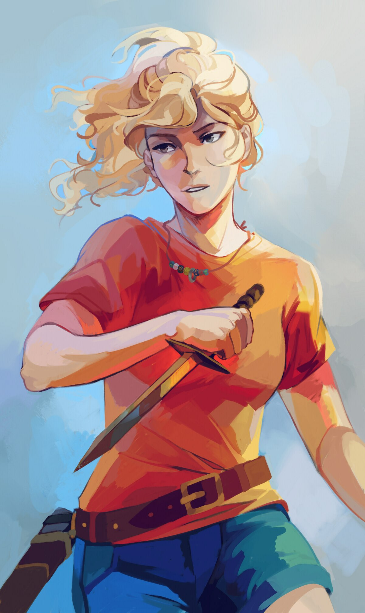

Wiki del Campamento Mestizo
Annabeth Chase
Annabeth Chase es una de las principales protagonistas de las sagas de Percy Jackson y los Dioses del Olimpo y Los héroes del Olimpo. Es una semidiosa griega hija de Atenea y del mortal Frederick Chase. Es la actual capitana de la Cabaña 6 y arquitecta del Olimpo. Annabeth es una de las mestizas más antiguas en el Campamento Mestizo, pues llegó a la edad de siete años. Es novia de Percy Jackson y mejor amiga de Grover Underwood. Es interpretada por Alexandra Daddario, en las adaptaciones cinematográficas de El ladrón del rayo y El mar de los monstruos.
Historia
Annabeth nació el 12 de julio de 1992. Cuando tenía cinco años, su padre se casó. Él y su esposa tuvieron dos hijos, los gemelos Matthew y Bobby Chase. Debido a que Annabeth era una semidiosa, su familia era constantemente atacada por monstruos, lo que provocaba peleas entre Annabeth y sus padres debido a que consideraban que ella siempre los estaba poniendo en peligro. Cuando era pequeña, solía ser atacada, mordida y cubierta de telarañas por arañas durante la noche y gritaba pidiendo ayuda a su padre, pero su madrastra pensaba que solo estaba fingiendo, porque cada vez que esta entraba en su habitación, las arañas se escondían y las picaduras se desvanecían por la mañana. En consecuencia, Annabeth pensó que su madrastra la consideraba un bicho raro, así que cuando tenía 7 años decidió huir de casa, cansada de que su familia no la apreciara y de que su padre nunca la defendiera.
Según lo revelado en La Espada del Tiempo, poco antes de escapar de su casa, Annabeth había visitado a su tío Randolph en su mansión durante el día de Acción de Gracias y había jugado con su primo Magnus, de cinco o seis años. Mientras, Frederick discutía con Randolph y su tía Natalie. Este argumento provocó una grieta en la familia que provocó la separación entre Annabeth, Magnus, Randolph y Natalie durante muchos años.
A pesar de la creencia de Annabeth de que su madrastra la odiaba, en realidad esta no tenía sentimientos hostiles hacía ella y, en cambio, se molestó por su partida. En la calle, Annabeth luchó contra los monstruos con la guía de su madre, Atenea, durante unos cuantos meses, utilizando únicamente un martillo.
Con solo siete años, Annabeth estaba escondida debajo de una plancha de acero en la Herrería Richmond, en el mismo callejón donde se encontraban los semidioses Luke Castellan, de catorce años; y Thalia Grace, de quince. En su huida de la Mansión de Halcyon, Thalia y Luke escucharon ruidos que provenían de la herrería, cuando entraron, encontraron una plancha de acero que temblaba levemente. Cuando la retiraron, Annabeth corrió hacia Luke con un martillo y casi le golpeó con él, pensando que era un monstruo. Cuando descubrieron que era una semidiosa, Luke la tranquilizó y le ofreció viajar con ellos. Además le entregó la daga que previamente le había dado Halcyon Green (de la cual Annabeth no se deshizo nunca hasta que se le perdió), con la promesa de ser una familia mejor a la que tenían con sus padres. Juntos huyeron a la carrera, luchando contra monstruos y haciendo escondites en lugares de la Costa Este, como el que Percy, Annabeth y Tyson utilizaron en Jamestown, Virginia. Por el camino, se encontraron con Zoë Belladona y las Cazadoras de Artemisa, quienes intentaron reclutar a Thalia para sus filas, pero ella se negó para poder permanecer con Luke y Annabeth.
Finalmente, se toparon con Grover Underwood, un sátiro, que había sido enviado para escoltar a Thalia al Campamento Mestizo, y que se ofreció a llevar a los otros dos también. Sin embargo, tomaron algunos caminos equivocados durante el trayecto. Uno de ellos fue en una guarida de un Cíclope, en la que todos fueron capturados, a excepción de Annabeth. Esta, después de deambular por el lugar, encontró donde el cíclope mantenía a Thalia, Luke y Grover. Estaban los tres colgando sobre una olla. El cíclope intentó atraer a Annabeth imitando la voz de su padre, pero en lugar de seguir a la voz y ser capturada, ella lo apuñaló con fuerza en el pie y desató a Thalia, quien se hizo cargo de todo lo demás. A pesar de que lograron escapar, se retrasaron el tiempo suficiente para que la manada de monstruos que les perseguían los alcanzaran. No podían correr más rápido que ellos, por lo que Thalia hizo el último sacrificio; dijo que se quedaría atrás para que así Annabeth, Grover y Luke pudieran llegar con seguridad a la Colina Mestiza. Se desconoce si ella realmente luchó contra los monstruos o no, pero se cree que así fue, y que por ello fue herida de muerte. Zeus, compadeciéndose de su hija, le salvó la vida convirtiéndola en pino, más tarde llamado Pino de Thalia. Este árbol se convirtió en una barrera para el Campamento contra los monstruos y los mortales, a menos que quien quisiera entrar fuera invitado por alguien desde el interior del Campamento.
Annabeth Chase
Titulos
Arquitecta del Olimpo
Héroe del Olimpo
Hija de Atenea
Caracteristicas Vitales
Nacimiento:12 de Julio de 1992, San Francisco, California
Edad: 17
Alias: Chica lista
Género: Femenino
Especie: Mestiza
Estatus: Vivo
Color de Pelo:Rubio
Color de ojos:Grises
Color de Piel: Clara
Estatura: 1,79m
Cita Destacada